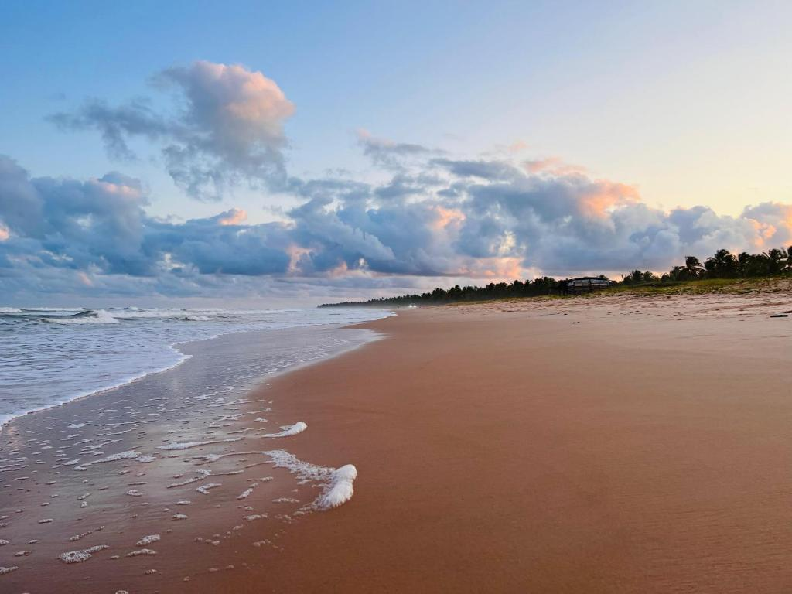
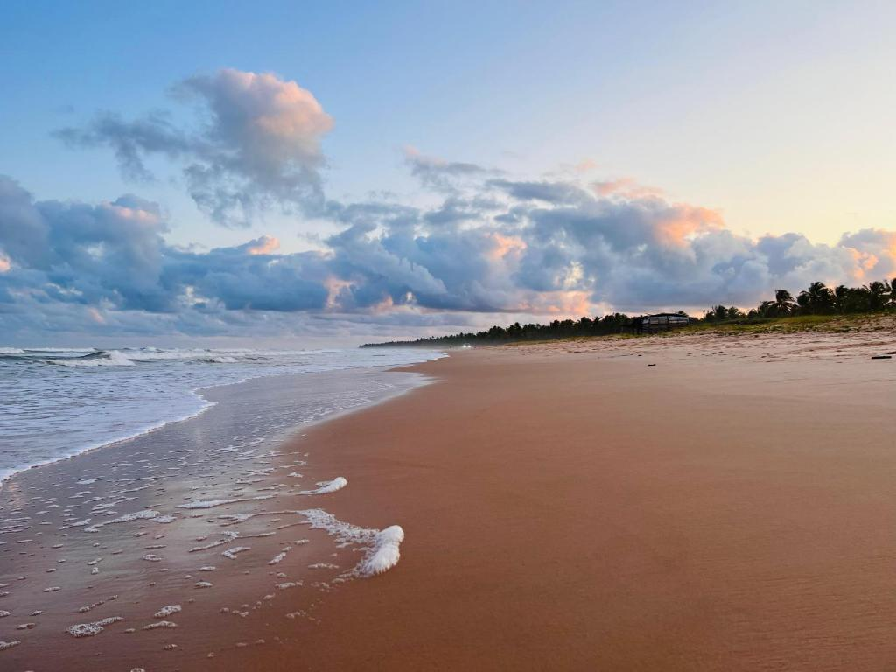

A PRAIA
No sul do estado de Alagoas, onde o tempo parece seguir outro ritmo e a natureza ainda reina soberana, está a Praia Miai de Baixo — um refúgio tranquilo, escondido entre falésias coloridas, vastos coqueirais e o mar azul que beija a costa com suavidade. Localizada no município de Coruripe, essa praia é uma das mais autênticas do litoral alagoano, preservando sua essência simples e encantadora. Miai de Baixo faz parte de um conjunto de praias com nomes indígenas — como Miai de Cima e Miai do Norte —, que compõem uma das regiões mais bonitas e menos exploradas da costa alagoana. A praia de Miai de Baixo, em especial, se destaca por sua beleza serena, seu clima de vila de pescadores e a sensação constante de que se está longe de tudo e perto do que realmente importa. A paisagem é digna de cartão-postal: mar calmo e cristalino, areia clara e fina, enormes paredões de falésias alaranjadas e um horizonte sem fim. As águas mornas e transparentes são protegidas por recifes naturais, o que forma piscinas durante a maré baixa e oferece um banho tranquilo, ideal para famílias com crianças e para quem busca relaxamento total. A rusticidade do lugar é seu maior charme. Não há grandes construções à beira-mar, nem resorts ou empreendimentos turísticos invasivos. O cenário é dominado pela natureza e por algumas casas simples de moradores locais. Isso garante uma atmosfera de autenticidade que encanta todos que chegam por ali — como se o tempo tivesse desacelerado para preservar a alma do lugar. O acesso à praia é feito por estradas de barro que cortam plantações de coqueiro e pequenos povoados, oferecendo ao visitante uma verdadeira imersão na vida rural e litorânea de Alagoas. Já na chegada à praia, é comum ver redes estendidas entre coqueiros, jangadas encostadas na areia e pescadores retornando do mar com suas redes carregadas de peixe fresco. A pesca artesanal ainda é o principal sustento da comunidade local. Os frutos do mar pescados no próprio dia abastecem as mesas das famílias e de pequenos restaurantes à beira-mar, onde se pode saborear delícias como peixe assado na brasa, moquecas, camarões, mariscos e o tradicional arroz de polvo — tudo feito com carinho, tradição e o sabor inconfundível da cozinha nordestina. Mas Miai de Baixo não é só mar e comida boa. A cultura local pulsa forte nas pequenas manifestações do cotidiano. As rendeiras ainda mantêm viva a arte do filé alagoano, produzindo peças rendadas com técnicas passadas de geração em geração. É comum ver mulheres trabalhando em suas portas, tecendo com paciência e maestria tramas que carregam história, identidade e beleza. A praia também é palco de celebrações religiosas e festas populares, como a tradicional Festa de São Sebastião, que movimenta a comunidade com procissões, música, danças e comidas típicas. Esses eventos revelam a fé e a alegria de um povo que, mesmo em meio à simplicidade, tem orgulho de suas raízes e sabe celebrar a vida. Para quem gosta de caminhar, Miai de Baixo é um verdadeiro convite. O extenso litoral permite longas caminhadas com os pés na areia, explorando pequenas enseadas, piscinas naturais e formações rochosas que guardam mistérios do tempo e do mar. Ao longo da orla, o contraste entre os tons quentes das falésias e o azul do oceano cria uma paleta de cores que fascina os olhos e acalma a alma. Os entardeceres em Miai de Baixo são mágicos. O sol se despede do céu tingindo tudo com tons dourados e alaranjados, refletindo no mar e nas falésias como uma pintura viva. É o momento em que o dia desacelera de vez, e o visitante se entrega ao silêncio da natureza, embalado pelo som suave das ondas e pela brisa fresca do mar. Durante a noite, o espetáculo continua no céu. Longe da poluição luminosa das cidades grandes, a praia oferece um céu estrelado impressionante. É comum ver constelações inteiras a olho nu, e em certas noites mais escuras, é possível avistar até a Via Láctea riscando o firmamento com sua trilha de estrelas. A Praia Miai de Baixo também é ponto de atenção ambiental. A região é habitat de tartarugas marinhas que, em determinadas épocas do ano, sobem à praia para desovar. Moradores e grupos ambientalistas se mobilizam para proteger os ninhos, promover a educação ecológica e garantir que esse espetáculo da natureza continue acontecendo por gerações. Nos últimos anos, a ideia de turismo sustentável vem ganhando força na comunidade. Pequenas pousadas, casas para aluguel e projetos de ecoturismo surgem com o compromisso de respeitar a natureza e fortalecer a economia local, sem transformar a paisagem ou o modo de vida que torna Miai de Baixo tão especial. O que diferencia Miai de Baixo de outras praias badaladas do litoral nordestino é sua capacidade de tocar o coração do visitante com simplicidade. Lá, não há pressa. As horas passam devagar, permitindo ao corpo descansar, à mente desacelerar e à alma se reconectar com o essencial. É um lugar onde se redescobre o prazer das pequenas coisas: o sabor de uma fruta colhida no pé, o calor do sol na pele, o som dos coqueiros dançando com o vento. Miai de Baixo é, sem dúvidas, um tesouro escondido de Alagoas. Um destino que ainda guarda a beleza bruta do litoral brasileiro, livre das pressões do turismo em massa. Um convite para viver dias de calmaria, contemplação e conexão com a natureza e com as raízes culturais de um povo acolhedor e resiliente. Quem visita Miai de Baixo não esquece. Leva consigo a lembrança de um lugar onde a beleza é real, onde a vida é simples e onde cada amanhecer traz a promessa de um dia inteiro de paz à beira-mar.
FOTOS
 
